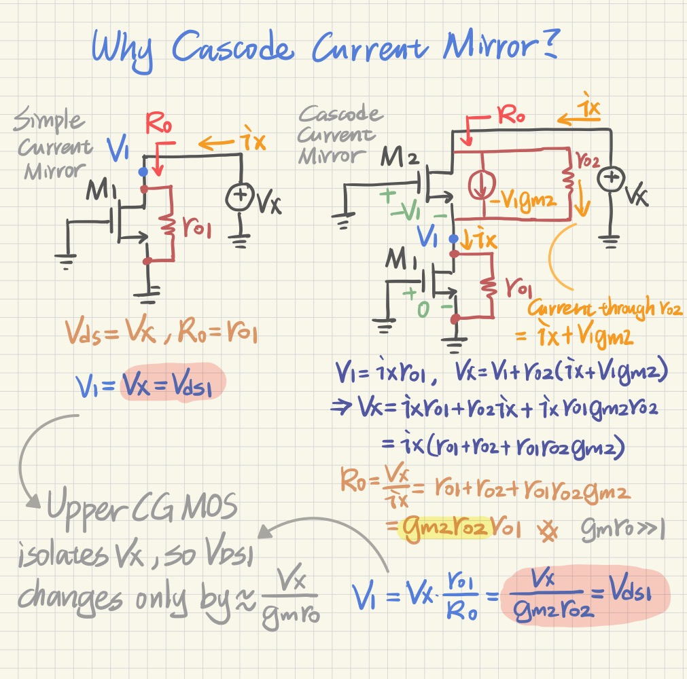
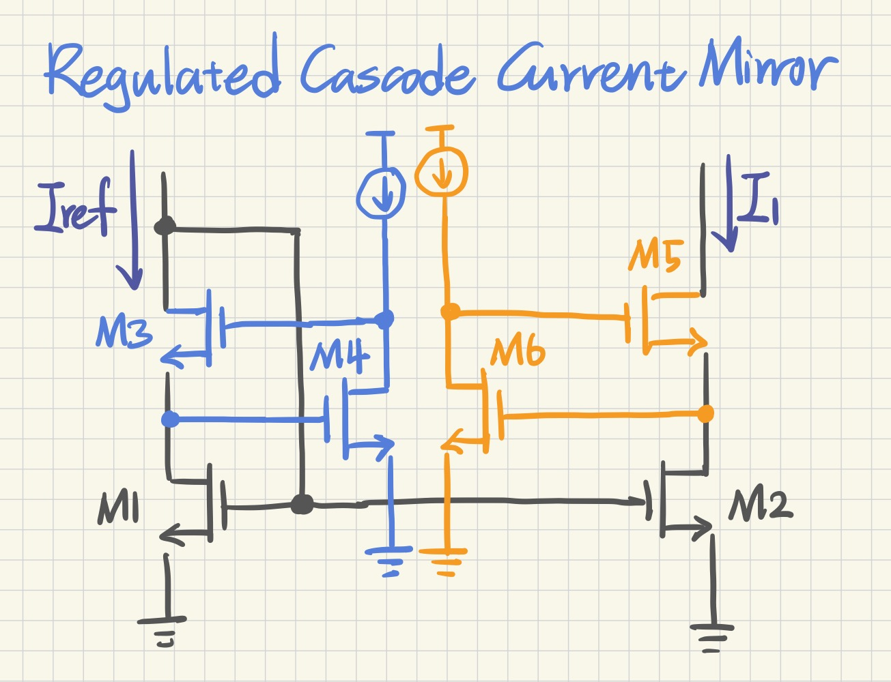
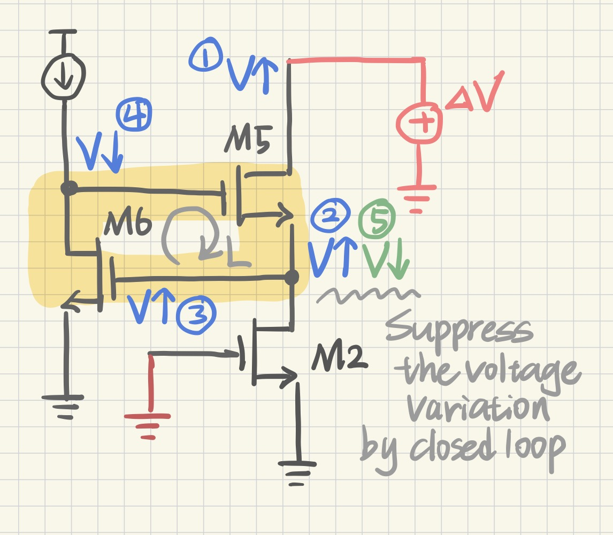
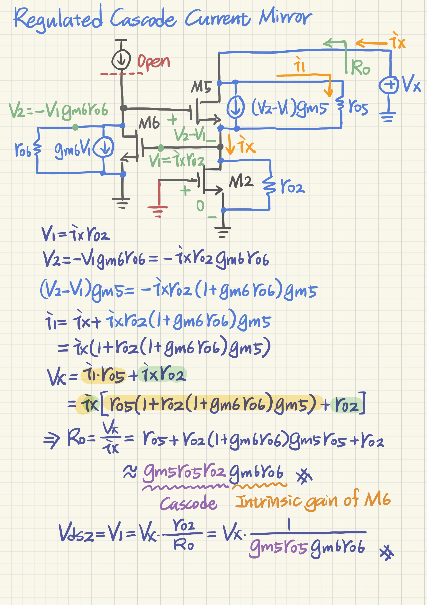
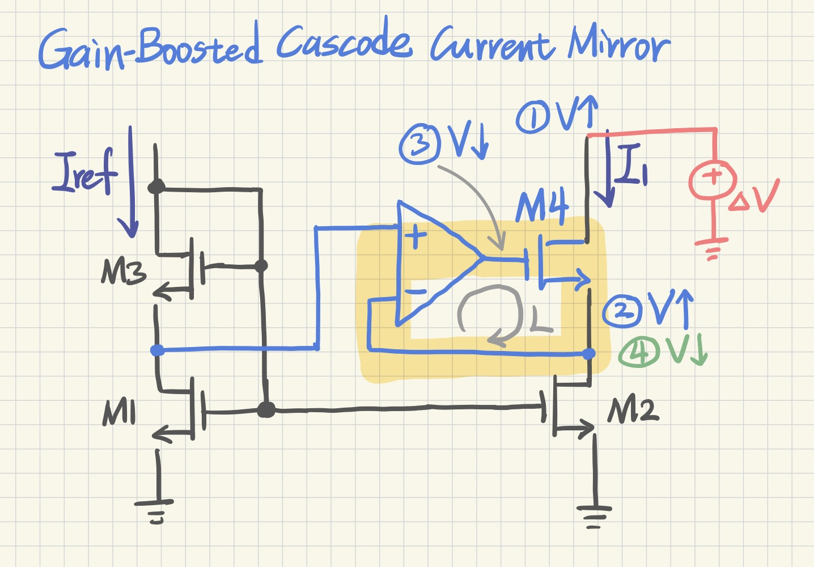
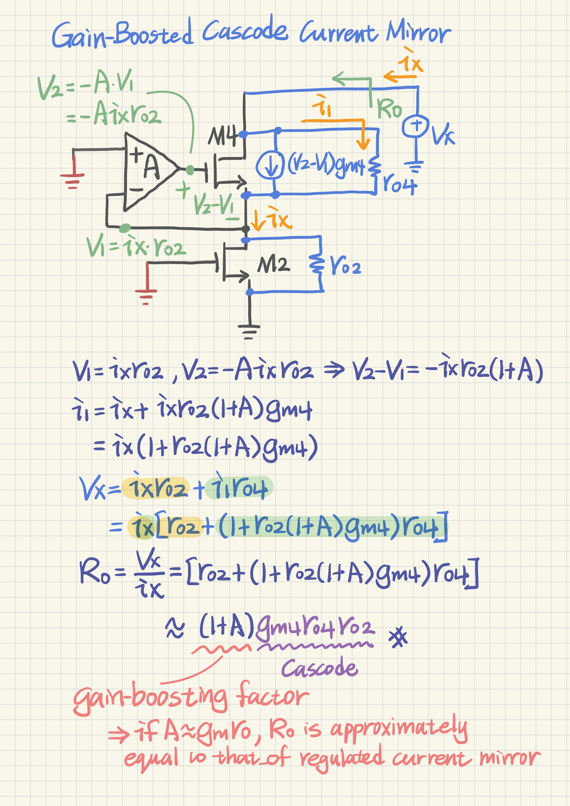

Current Mirrors
Current-mirror operation, matching, output resistance, and practical limitations.
Why Cascode Current Mirror? Output-resistance improvement by drain-voltage isolation
Last updated · 2026.08.03
Concept
In a simple current mirror, the output voltage directly appears across the output transistor. Therefore, a change in VOUT produces a comparable change in its drain-source voltage and causes the output current to vary through channel-length modulation.
The upper common-gate transistor in a cascode mirror isolates the lower transistor from the output node. Most of the output-voltage variation is absorbed by the upper device, while the lower-device drain voltage changes only by approximately a factor of 1/(gmro).
- Simple mirror: the lower MOS directly sees the output-voltage variation.
- Cascode mirror: the upper common-gate MOS shields the lower drain node.
- The reduced drain-voltage variation produces a much larger output resistance.
Rout,simple = ro1
Rout,cascode = ro1 + ro2 + gm2·ro1·ro2
Rout,cascode ≈ gm2·ro1·ro2, when gm·ro ≫ 1
ΔVDS1 ≈ ΔVOUT / (gm2·ro2)
Regulated Cascode Current Mirror Additional local gain further suppresses the internal-node variation
Last updated · 2026.08.06
images/current_mirror/IMG_0112.JPG
Figure 2. Complete regulated-cascode current mirror: the reference branch establishes the bias, while the output branch uses M5–M6 to isolate M2 from output-voltage variation.

images/current_mirror/IMG_0113.JPG
Figure 3. Local closed-loop intuition: when the internal node moves, the M5–M6 feedback path generates a correction that suppresses the voltage variation seen by M2.

Core idea
The regulated cascode can be viewed as a cascode mirror with an extra local feedback path. The left branch establishes a reference bias, while the right branch uses M5 and M6 to keep the drain voltage of M2 from moving too much. Once the drain voltage of M2 is stabilized, the channel-length-modulation error is strongly reduced and the mirrored output current becomes much flatter.
When VOUT changes, M6 senses the internal-node shift and adjusts M5, keeping the drain voltage of M2 nearly constant.
This local negative feedback reduces channel-length modulation and increases the output resistance.
- M5 provides the basic cascode shielding against output-voltage variation.
- M6 adds local gain, so the internal-node error is attenuated a second time.
- The drain-voltage swing of M2 becomes much smaller than the output swing.
- Smaller drain-voltage variation means smaller current error and larger Rout.
Rout = ro5 + ro2(1 + gm6·ro6)gm5·ro5 + ro2
Rout ≈ gm5·ro5·ro2·gm6·ro6
ΔVDS2 ≈ ΔVOUT / (gm5·ro5·gm6·ro6)
Link to gain boosting
Figure 5 in the next section shows the next step: instead of relying only on the intrinsic gain of M6, a dedicated amplifier senses the node error and drives the cascode gate. The philosophy is the same—keep the drain voltage of M2 nearly constant—but the correcting gain can be made much larger and more controllable.
Gain-Boosted Cascode Current Mirror Amplifier-assisted regulation of the cascode gate
Last updated · 2026.08.06
images/current_mirror/IMG_0114.JPG
Figure 5. An explicit amplifier senses the internal drain node and drives the cascode gate, converting the same regulation idea into a higher-gain gain-boosted loop.

Circuit-level intuition
Figure 5 replaces the intrinsic regulating transistor with an explicit amplifier. The amplifier compares the internal drain voltage with the reference-side voltage and drives M4 so that the two nodes remain nearly equal. This directly suppresses the drain-voltage variation of M2.
Gain-boosting mechanism
The amplifier senses the internal drain voltage and adjusts the cascode-gate voltage so that the internal node remains nearly constant. The cascode transistor still provides the basic output-resistance multiplication, while the amplifier contributes an additional factor of approximately 1 + A.
Increasing amplifier gain makes the output-current curve flatter, but the practical design must also consider amplifier bandwidth, stability, noise, output swing, and power consumption. Therefore, the DC gain shown here is only one part of a complete gain-boost design.
- The amplifier actively regulates the lower-device drain voltage.
- The output-resistance enhancement is approximately proportional to 1 + A.
- Compared with the regulated cascode, the correction gain is set more explicitly by the amplifier.
- If A is comparable to an intrinsic-gain factor, the result approaches the regulated-cascode case.
Rout = ro2 + [1 + ro2(1 + A)gm4]ro4
Rout ≈ (1 + A)gm4·ro4·ro2
Gain-boost factor ≈ 1 + A